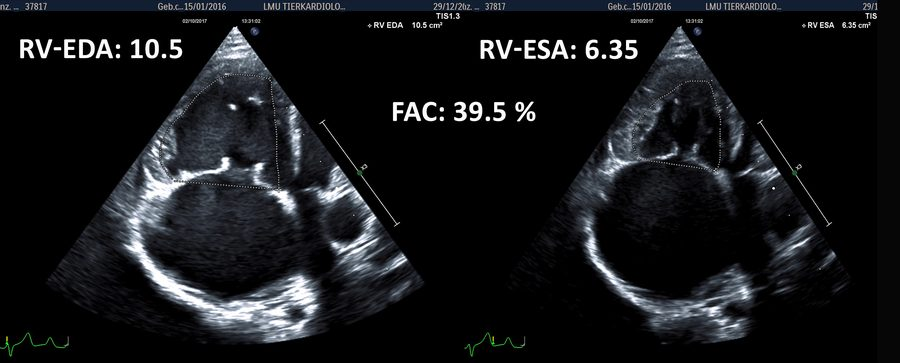

ESAVS Echocardiography · Chapter 08
RV 因幾何形狀複雜、過去多仰賴主觀評估；本節介紹如何取得優化 RV 切面，以及 RV-EDA、RV-ESA、TAPSE、FAC 等可指標化的定量參數。
由 4-CH view 往前滑 1–2 個肋間、略往後看，RV 腔室應呈三角形而非新月形，且不應看到 LV 流出道
右心室舒張／收縮末期面積
Tricuspid Annular Plane Systolic Excursion：三尖瓣環收縮期位移，游標應盡量平行 RV 游離壁並通過心尖
指標化 RV 游離壁厚度：cm / kg0.25，正常 < 0.39
| 參數 | 正常上限 | 指標化指數 |
|---|---|---|
| RV-EDAn（2D 面積） | ≤ 1.4 cm²/kg0.665 | 0.665 |
| RV-ESAn（2D 面積） | ≤ 0.8 cm²/kg0.695 | 0.695 |
| TAPSEn | ≥ 4.5 mm/kg0.285 | 0.285 |
| iRVFW（游離壁厚度） | < 0.39 cm/kg0.25 | 0.25 |
| EDVn（3D 體積） | ≤ 2.5 mL/kg0.942 | 0.942 |
| ESVn（3D 體積） | ≤ 1.2 mL/kg0.962 | 0.962 |
| TVI S'-n（組織都卜勒收縮速度） | ≥ 5.6 cm/s/kg0.186 | 0.186 |
| RV-EDAn（正常 ≤1.4） | – |
| RV-ESAn（正常 ≤0.8） | – |
| TAPSEn（正常 ≥4.5） | – |
| FAC%（正常 >30%） | – |
